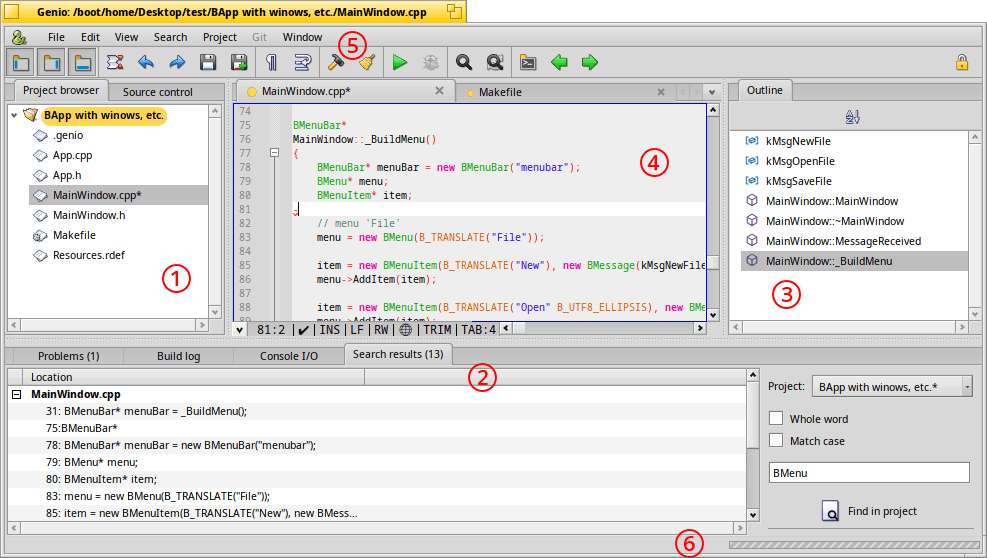
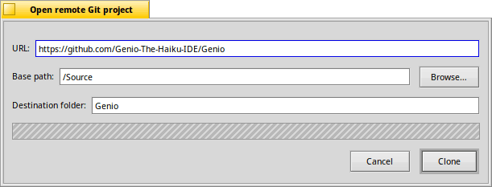

Genio's User Documentation
Genio is an Integrated Development Environment (IDE) for Haiku. It's using Scintilla for its advanced editing features, like syntax highlighting and folding code blocks. Clang's LSP is used to provide real time analysis to warn about problems, provide solutions in a tooltip, code completion and more. Optionally Genio respects formatting with EditorConfig.
Most of Genio's features are easily discovered and don't need an explanation.
If you have questions or issues that should be added to the documentation, please use Genio's Discussions forum.
Quick start
For orientation, let's start with a quick overview of Genio's main window, with its pane to the left (1), pane at the bottom (2), the pane at the right (3), the view in the middle (4), and at the top (5).

Open/create a new project
It's very easy to start a new project in Genio, either from scratch, from a template, or from an existing location on your harddisk or a remote repository.
A local project
To "import" an existing project, you simply invoke and browse to its folder and open it. Its files and folders appear in the pane at the left.
A remote project
If a project is hosted on a remote git repository like "gitlab" etc., it's almost as easily added with . That'll open this window:

You enter the of the project's repo page, and browse to the which is the location the source will be downloaded to. Optionally you can change the , which will be auto-filled once you entered the URL.uses git to get the source.
A project from scratch
Starting from scratch, you pick an item from the menu.
Choose for an empty folder, or one of the templates for a folder already populated with some functional source files.
A file dialog will open to browse to the location where you want to save your project.
You can continue to add, rename or delete files by right-clicking in the pane.
Source control

In the tab of the pane you find most often needed actions to interact with your git repository. You can switch, create and remove branches and fetch or stash changes etc.
Even if you don't work with a remote git repository, it's a good idea to initialize a local git repo. It enables you to work in branches and commit code changes in batches, which makes it possible to experiment and revertig back to previous states.
If there isn't already, Genio offers you to .
Project settings
To be able to build your project, you need to open the .

Here you specify the correct commands to build your project and where to find the executable (the "") when it was successful. The commands to use depend on your build system. Genio recognizes "Make" and "Jam" build systems and tries to provide working commands, but you may want to tweak things a bit.
For more details, please refer to Project settings.
Next: Editor